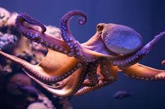

누가 제일 똑똑할까? 동물계의 아인슈타인!
누가 제일 똑똑할까? 동물계의 아인슈타인!
사람들은 '가장', '최고', '으뜸', '제일' 등 특정 분야나 한 영역에서 가장 잘하는 것을 궁금해합니다. 설령 자신이 도전하지 못하는 영역이라도 누가 세계 최고인지 궁금한 것이지요. 이런 질문은 동물에게도 해당합니다. 어떤 동물이 가장 똑똑하고 지능이 높은 것인지 궁금해합니다. 흔히 지능이 높다고 알려진 동물은 인간과 유사한 침팬지나 돌고래를 많이 언급합니다. 요즘은 미니돼지를 키우는 사람도 많아져서 미니돼지 역시 지능이 높은 동물이라고 말하죠! 하지만 의외로 지능이 높은 동물은 따로 있다는 사실 알고 계셨나요? 누가 제일 똑똑한 동물인지! 동물계의 아인슈타인은 누군지 알아볼게요.
"제일 똑똑한 동물, 문어"
침팬지, 돌고래도 아닌 문어라니! 다소 놀라신 분도 있을 것 같네요. 동물에 대한 여러 가지 능력을 측정해서 연구한 결과 문어가 가장 똑똑하다고 하는 데요!
우리가 보편적으로 알고 있는 사실에 따르면 돌고래가 가장 똑똑하다고 알려졌지만, 돌고래만큼 그리고 돌고래보다 똑똑한 것은 바로 문어라고 합니다.
"지능 지수가 높은 문어"
척추가 없는, 즉 뼈가 없는 동물인 문어는 가장 똑똑한 동물로 알려졌습니다. 뼈는 없지만 턱 힘이 좋아 게나 가재, 연체동물을 잡아먹고요. 문어한테는 독이 있어 독을 활용해 사냥하고 잡아먹을 동안 꼼짝하지 못하게 만듭니다. 민첩하고 빠른 편이죠. 문어는 소리를 듣지 못하고 소리를 내지도 못합니다. 그저 눈에 의지해서 활동하는 데 영리하고 똑똑합니다.
"문어가 가진 기술"
문어가 생존하기 위해서는 몇 가지 기술을 활용합니다. 즉, 생존력을 바탕으로도 문어의 지능을 판단할 수 있습니다.
1) 문어는 생존하기 위해 먹물을 분사합니다.
상위 포식자가 나타나면 문어 역시 도망치거나 그 상황을 회피해야 합니다. 그럴 때 먹물을 분사해서 위험에서 벗어나는 것이죠. 문어는 매우 민첩해서 먹물로도 순간적으로 피할 수 있습니다.
2) 문어는 행동을 따라 하는 능력이 있습니다.
도마뱀처럼 자신의 모습을 숨기거나 환경에 맞춰 변화하듯 문어 역시 생존을 위해 다른 동물을 따라 하는 능력이 있습니다. 즉, 다른 동물의 행동을 인지하고 그것을 따라 한다는 것은 그만한 지능이 뒷받침한다는 것이겠죠.
3) 문어는 문제 해결 능력이 있습니다.
참 신기하죠. 문어는 사람처럼 장기기억과 단기기억 장치가 있어 기억 장치를 활용해서 생존을 위한 문제를 해결하고 미로를 벗어납니다.
4) 문어는 다양한 방식으로 움직입니다.
문어는 신기하게도 천천히 걷고, 빠르게 헤엄치고, 조금 더 빠르게 움직이는 등 속도를 조절하고 자신의 신체를 다양한 방식으로 활용합니다. 보통 지능으로는 힘든 일이겠죠.

이외에도 재생 능력이 있거나 자신을 보호하는 독성 물질을 뿜는다는 등 문어는 생존을 위해 여러 가지 방법이 발달해 있습니다. 무엇보다 기억할 수 있는 기억 장치가 있다는 것이 바로 문어의 지능을 높게 사는 부분이 아닐까 싶습니다!
[출처] 누가 제일 똑똑할까? 동물계의 아인슈타인! ｜ 작성자 쿠즈펫